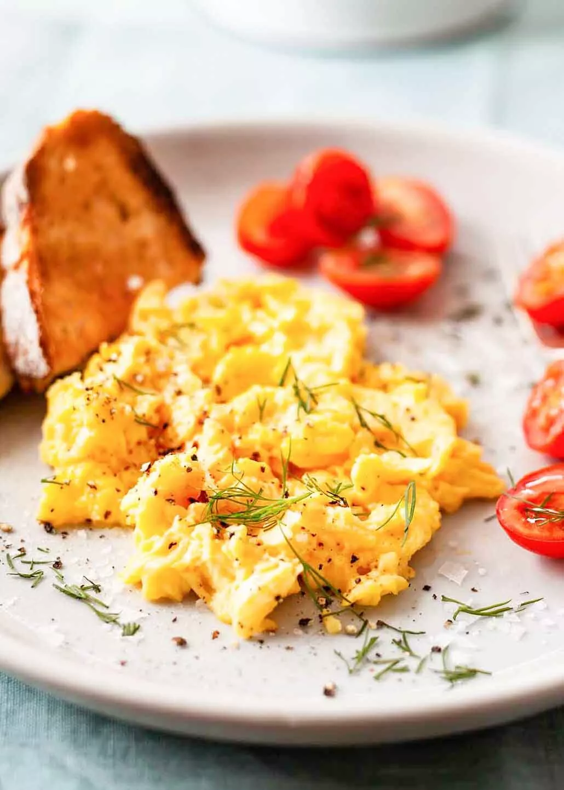

Scrambled Eggs

Description
To begin, take the desired amount of eggs, crack them
into a bowl, and start whisking.
Next, you're going to have to place a pan with olive oil over
a flame. Then pour the eggs in so that they can begin cooking.
Ingredients
- eggs
- milk
- oil
- whisk
- bowl
- spatula
- frying pan
- (choice of) cheese, meat, vegetable, etc.
Steps
- crack eggs and pour them into bowl
- whisk them until no more white is showing
- add milk, continue whisking
- pour eggs into pan
- move them around in pan with spatula until cooked
- serve them on to plate